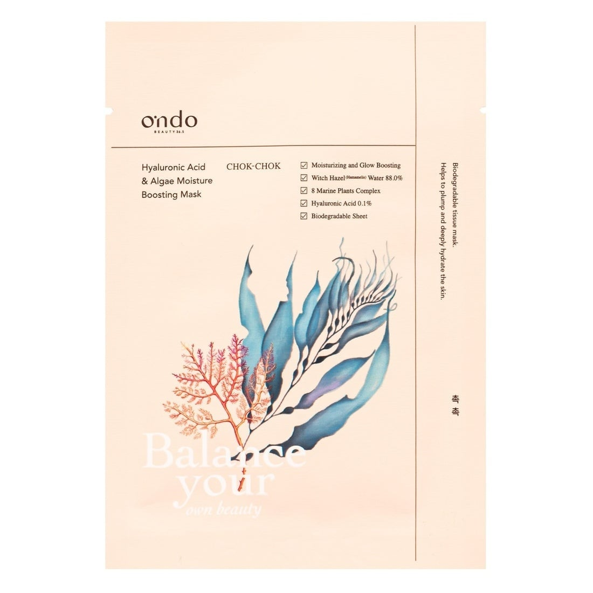
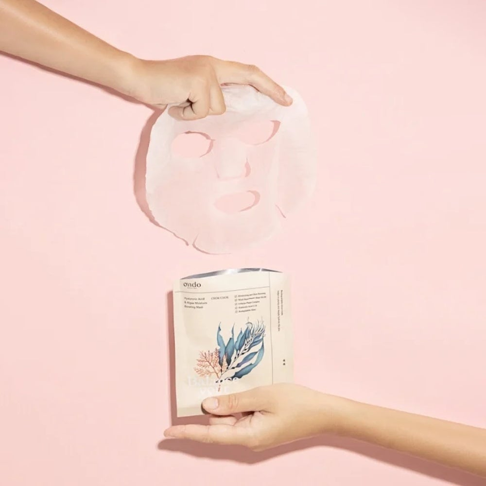

<div> <table style="border-collapse: collapse; width: 99.9809%;" border="1"><colgroup><col style="width: 49.9522%;"><col style="width: 49.9522%;"></colgroup> <tbody> <tr> <td> <div><span style="font-size: 14pt;"><strong>Ondo Beauty 36.5 Masca de fata cu acid hialuronic si ingrediente marine, 25ml</strong></span></div> <div><span style="font-size: 14pt;">Ondo Beauty 36.5 Hyaluronic Acid &amp; Algae Moisture Boosting Mask. Designul elegant evidențiază ingredientele marine active și formulele cheie:&nbsp;<span data-math="88.0\%" data-index-in-node="178"><span aria-hidden="true">88.0%</span></span> apă de hamamelis, un complex de 8 plante marine și <span data-math="0.1\%" data-index-in-node="236"><span aria-hidden="true">0.1%</span></span> acid hialuronic pentru o hidratare intensă de tip &bdquo;chok-chok&rdquo;.</span></div> </td> <td></td> </tr> <tr> <td></td> <td><span style="font-size: 14pt;">Ondo Beauty 36.5 Hyaluronic Acid &amp; Algae Moisture boosting cu masca textilă biodegradabilă, fină și intens &icirc;mbibată &icirc;n esență hidratantă, gata de aplicare pentru a oferi tenului un efect instantaneu de volum, netezire și luminozitate profundă.</span></td> </tr> </tbody> </table> </div>